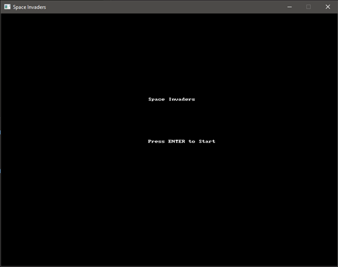
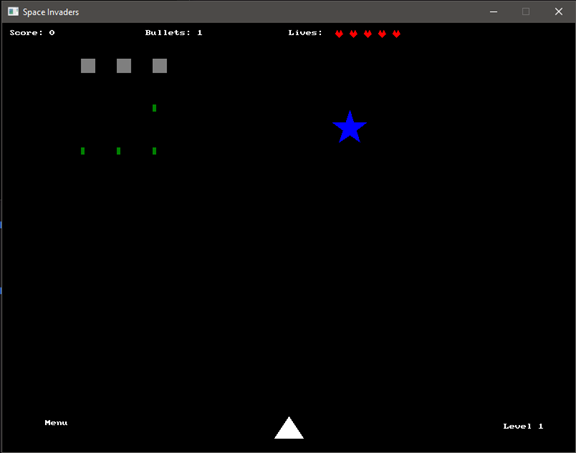
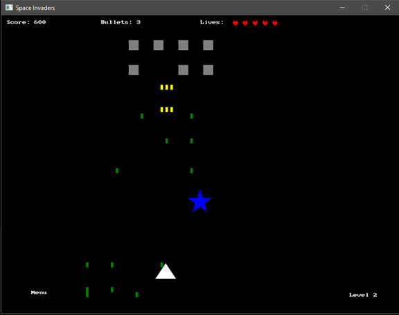
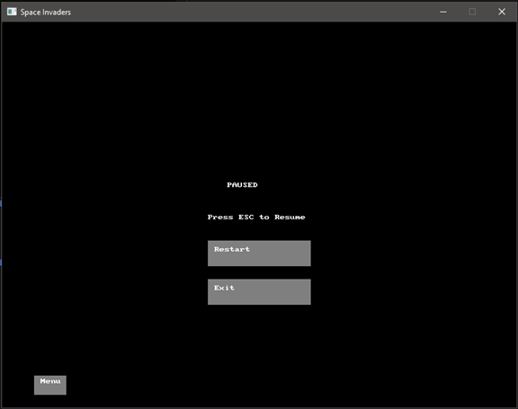
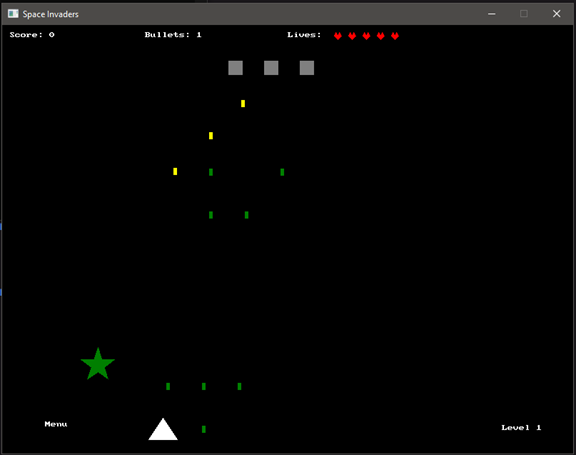
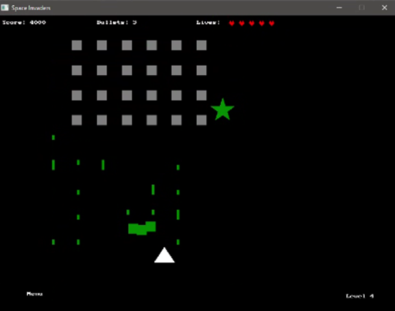
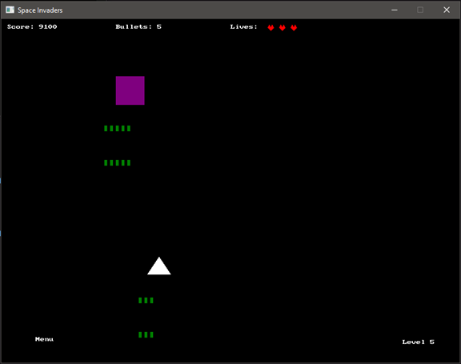
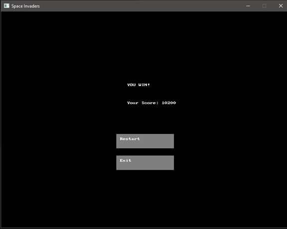

Introduction
Game Overview
This project is a reimplementation of the classic arcade game, Space Invaders. The player controls a spaceship that moves and shoots projectiles to destroy waves of alien invaders. The game features different enemy types, power-ups, and a boss fight.
Development Tools
The game is developed using C# and SplashKit, a library that supports rendering and input handling.
Game Design
Player Mechanics
- The player ship can move using the arrow keys or WASD.
- Pressing the spacebar allows the player to shoot projectiles at the aliens.
- Picking up power-ups enhances player abilities, such as faster firing or extra lives.
Enemy Types
- Standard Alien Ships: Move in formation and shoot projectiles at the player.
- AlienChaser: Enemies that pursue the player's ship.
- BossAlien: Stronger enemies that appear at the end of certain levels with more health and shoot more projectiles at the player.
Levels and Progression
The game becomes progressively harder as the player advances through levels. The boss appears at level 5, and the player has a limited number of lives. Power-ups are collected to improve the player's chances of surviving the increasingly difficult waves.
Object-Oriented Design Principles
Abstraction
The game uses abstract classes to structure common behaviours for different types of entities. The Entity class serves as a base for core game objects like PlayerShip and EnemyShip, providing shared properties such as position and movement capabilities.
Additionally, the Projectile abstract class outlines essential behaviours for all projectiles. Specific types of projectiles, like standard bullets and alien lasers, inherit from Projectile and implement their own unique effects.
Inheritance and Polymorphism
The EnemyShip class serves as the base class for enemy types like AlienChaser and BossAlien. These subclasses implement unique behaviour, such as chasing the player or shooting more projectiles, demonstrating polymorphism.
Design Patterns
- Factory Pattern: The EnemyFactory class is used to create various enemy types depending on the level.
- Observer Pattern: The ScoreManager class observes changes in game events (like enemy destruction and power-ups earned) and updates the player's score accordingly.
Design Features
- State Management: The game employs an IGameState interface with specific states to manage transitions between game modes smoothly, enhancing modularity.
- Object-Oriented Structure: Core classes like Entity, PlayerShip, EnemyShip, Projectile, and PowerUp follow principles of inheritance and encapsulation, making it easy to add or modify game entities.
- Factory Pattern: EnemyFactory and PowerUpFactory streamline the creation of different enemy types and power-ups, making level customization more manageable.
- Observer Pattern: ScoreManager implements the observer pattern to keep track of score changes, updating the UI immediately when an enemy is defeated or a power-up is collected.
- User Interface (UI): GameUI centralizes the display of essential game information, such as score, lives, and level progress, ensuring a clean interface.
- Collision Detection: Custom collision handling ensures responsive interactions and meaningful gameplay outcomes.
- Level Progression: LevelManager orchestrates the advancement of levels, adding variety and challenge as the player progresses.
Thumbnail Gallery

Main menu interface with option to start the game.

Initial gameplay screen showing the player ship, alien formation shooting, score, lives, number of player's bullets, level, and the menu button.

After collecting a blue power-up, the player ship now shoots three bullets simultaneously, enhancing its firepower. Power-up types are visually indicated by color: blue for increased bullets and green for extra lives.

Game paused screen displaying options to resume, restart or exit, with game details frozen.

The player has restarted the game. The green star power-up is visible on the left, ready to be collected. This power-up restores one of the player's lives when collected, while the player navigates through a new wave of enemies.

Gameplay showing the AlienChaser enemy tracking the player's ship, illustrating enemy behaviour.

During the boss fight, the BossAlien shoots multiple projectiles at once and has significantly more health than regular enemies, requiring the player to employ strategic movement and precise shooting.

Victory screen celebrating the player's success after defeating the boss and completing the final level. The player's final score is displayed, along with options to either restart the game or exit to the main menu.
Conclusion
This project demonstrates object-oriented design principles like abstraction, inheritance, and polymorphism. The use of design patterns such as the Factory and Observer patterns allows for scalability and modularity in the game's structure.
Future improvements could include adding new enemy types and power-ups or introducing multiplayer functionality.